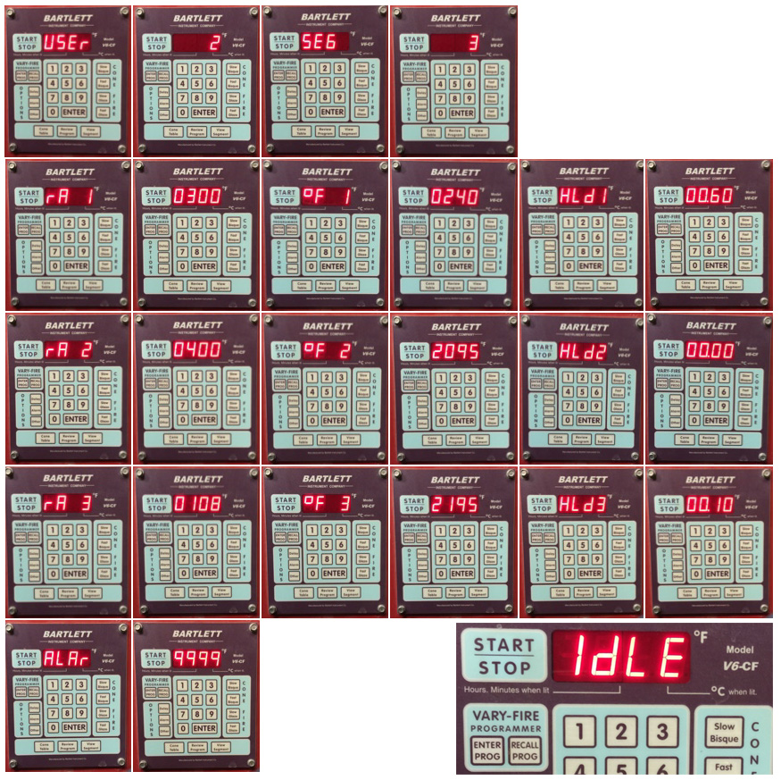
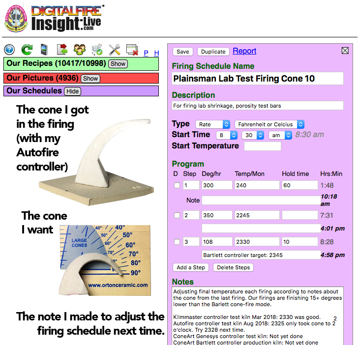
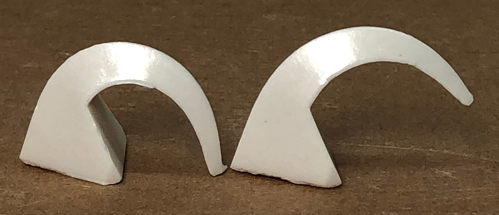
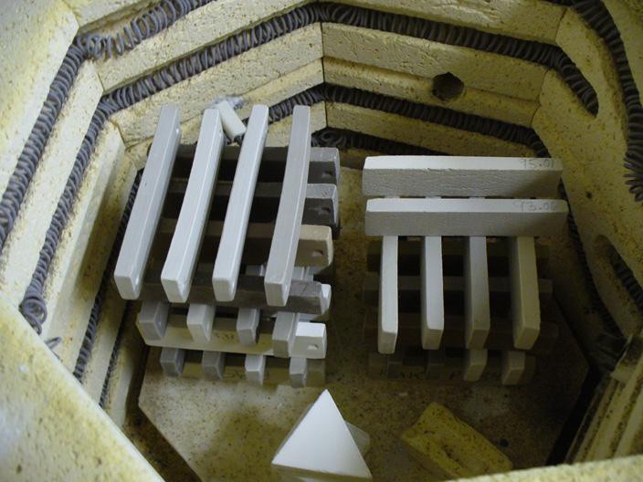
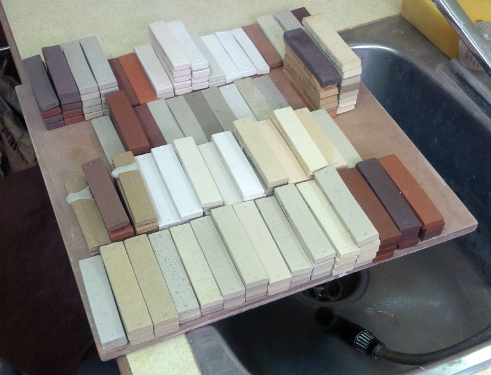

04DSDH - Low Temperature Drop-and-Hold
BQ1000 - Plainsman Electric Bisque Firing Schedule
BRTF05 - Bartlett Fast Glaze Cone 05
BRTF6 - Bartlett Fast Glaze Cone 6
BRTS6 - Bartlett Slow Glaze Cone 6
BTFB04 - Bartlett Fast Bisque Cone 04
BTSB04 - Bartlett Slow Bisque Cone 04
BTSG05 - Bartlett Slow Glaze Cone 05
C04PLTP - Plainsman Low Temperature Drop-and-hold
C10RPL - Plainsman Cone 10R Firing
C5DHSC - Plainsman Cone 5 Drop-and-Hold Slow-Cool
C6DHSC - Plainsman Cone 6 Drop-and-hold, Slow Cool
C6IRED - Cone 6 Iron Reds
C6MSGL1 - Mastering Glazes Cone 6
C6PLST - Plainsman Cone 6 Electric Standard
FSCG1 - Shimbo Crystal Schedule 1
FSCGB1 - Shimbo Crystal Holding Pattern 2
FSCGCL - Shimbo Crystal Celestite Schedule
FSCGWM - Wollast-O-Matte Fara Shimbo Crystalline Glaze
FSCRGL - GC106 Base for Crystalline Glazes
FSHP1 - Shimbo Crystal Holding Pattern 1
FSHP3 - Shimbo Crystal Holding Pattern 3
FSNM5 - Fa's Number Five
MDDCL - Medalta Decal Firing
PLC6CR - Cone 6 Crystal Glaze Plainsman
PLC6DS - Cone 6 Drop-and-Soak Firing Schedule
QICA - Quartz Inversion Cracking Avoider
"C6PLST" Firing Schedule
Plainsman Cone 6 Electric Standard
We use this schedule to fire clay test bars. Pieces in the kiln have not been bisque fired and are generally not glazed. All the other temperatures (from 06 to 10) follow that same pattern, slowing down for the last 100 degrees F to top temperature and then holding for 10 minutes. If the kiln is more densely packed we lengthen the first step hold time (to drive out all residual water from body and glaze) and hold for longer than 10 minutes. This rate of increase is one that our kilns can manage, even when their elements age.
For glazed ware, it is essential to do a drop-and-hold and optionally, a slow cool firing, such as the C6DHSC or PLC6DS schedules.
Always include a self-supporting firing cone. If the cone does not fall the correct amount, adjust the firing schedule for next time.
| Step | °C | °F | Hold | Time | |
|---|---|---|---|---|---|
| 1 | 55°C/hr to 121C | 100°F/hr to 250F | 60min | 2:45 | |
| 2 | 194°C/hr to 1148C | 350°F/hr to 2100F | 0 | 8:02 | |
| 3 | 60°C/hr to 1204C | 108°F/hr to 2200F | 10min | 9:07 |
"Fahrenheit degrees" is not the same as "degrees Fahrenheit". A 100° reading on a Fahrenheit thermometer is equal to a 37° reading on a Celcius thermometer. But "100 Fahrenheit degrees of temperature change" is equivalent "55 Celsius degrees of change". That is an important distinction to understand the above temperature conversions.
Related Information
Manually programming a Bartlett V6-CF hobby kiln controller

This picture has its own page with more detail, click here to see it.
I document programs in my account at insight-live.com, then print them out and enter them into the controller. This controller can hold six, it calls them Users. The one I last edited is the one that runs when I press "Start". When I press the "Enter Program" button it asks which User: I key in "2" (for my cone 6 lab tests). It asks how many segments: I press Enter to accept the 3 (remember, I am editing the program). After that it asks questions about each step (rows 2, 3, 4): the Ramp "rA" (degrees F/hr), the Temperature to go to (°F) to and the Hold time in minutes (HLdx). In this program I am heating at 300F/hr to 240F and holding 60 minutes, then 400/hr to 2095 and holding zero minutes, then at 108/hr to 2195 and holding 10 minutes. The last step is to set a temperature where an alarm should start sounding (I set 9999 so it will never sound). When complete it reads "Idle". Then I press the "Start" button to begin. If I want to change it I press the "Stop" button. Those ten other buttons? Don't use them, automatic firing is not accurate. One more thing: If it is not responding to "Enter Program" press the Stop button first.
Program your firings manually
Calibrate the final temperature using cones

This picture has its own page with more detail, click here to see it.
Here is an example of our lab firing schedule for cone 10 oxidation (which the cone-fire mode does not do correctly). To actually go to cone 10 we need to manually create a program that fires higher than the built-in cone-fire one. Determining how high to go is a matter of repeated firings verified using a self-supporting cone (regular cones are not accurate). I keep notes in the schedule record in an account at insight-live.com. And we have a chart on the wall showing the latest temperature for each of the cones we fire to. What about cone 6? Controllers fire it to 2235, we put down a cone at 2200!
How many degrees between these cone positions?

This picture has its own page with more detail, click here to see it.
I was consistently getting the cone on the left when using a custom-programmed firing schedule to 2204F (for cone 6 with ten minute hold). However Orton recommends that the tip of the self supporting cone should be even with the top of the base (they consider the indicating part of the cone to be the part above the base). So I adjusted the program to finish at 2200F and got the cone on the right. But note: This applies to that kiln at that point in time (with that pyrometer and that firing schedule). Our other test kiln bends the cone to 5 o'clock at 2195F. Since kiln controllers fire cone 6 at 2230 (for the built-in one-button firings) your kiln is almost certainly over firing!
Dried test bars stacked into an electric kiln for firing

This picture has its own page with more detail, click here to see it.
These have already been measured to deduce drying shrinkage. After firing they will be measured again to calculate the firing shrinkage. Then they will be weighed, boiled in water and weighed again to determine the water absorption. Fired shrinkage and absorption are good indicators of body maturity.
A batch of fired clay test bars in the Plainsman Clays lab

This picture has its own page with more detail, click here to see it.
A batch of fired test bars that have just been boiled and weighed, from these we get dry shrinkage, fired shrinkage and porosity. Each pile is a different mix, fired to various temperatures. Test runs are on the left, production runs on the right. Each bar is stamped with a code number and specimen number (the different specimens are the different temperatures). The measurements have all been entered into our group account at insight-live.com. Now I have to lay out and photograph each pile and upload the picture into the code-numbered record. Upon doing so I compare color and tests results to make decisions on what to do next (documenting these in insight-live).
Links
| Recipes |
GR6-H - Ravenscrag Cone 6 Oatmeal Matte
Plainsman Cone 6 Ravenscrag Slip glaze. See more at ravenscrag.com. |
| Recipes |
GR6-E - Ravenscrag Cone 6 Raspberry Glossy
A chrome-tin burgundy glaze using the Ravenscrag cone 6 base recipe. |
| Recipes |
GA6-G - Alberta Slip Lithium Brown Cone 6
Plainsman Cone 6 Alberta Slip based glaze. |
| Recipes |
GR6-A - Ravenscrag Cone 6 Clear Glossy Base
This Plainsman Cone 6 Ravenscrag Slip base is just the pure material with 20% added frit to make it melt to a glossy natural clear. |
| Recipes |
G1214Z1 - Cone 6 Silky CaO matte base glaze
This glaze was born as a demonstration of how to use chemistry to convert a glossy cone 6 glaze into a matte. |
| Recipes |
GR6-B - Ravenscrag Cone 6 Variegated Light Glossy Blue
Plainsman Cone 6 Ravenscrag Slip based glaze. It can be found among others at http://ravenscrag.com. |
| Recipes |
G1214M - 20x5 Cone 6 Base Glossy Glaze
Developed by Tony Hansen in the 1980s. Its was popular for the simplicity and how well it worked with chrome-tin stains. |
| Recipes |
G1215U - Low Expansion Glossy Clear Cone 6
A recipe sourcing high MgO (from Ferro Frit 3249) to produce a low expansion glass resistant to crazing on lower silica porcelains. |
| Recipes |
G2826R - Floating Blue Cone 5-6 Original Glaze Recipe
Floating Blue is a classic cone 6 pottery glaze recipe from David Shaner. Because of the high Gerstley Borate content it is troublesome, difficult. But there are alternatives. |
| Recipes |
G1214W - Cone 6 Transparent Base
A cone 6 base clear glaze recipe developed by deriving a recipe from a formula taken as an average of limit formulas |
| Recipes |
g2851H - Ravenscrag Cone 6 High Calcium Matte Blue
Plainsman Cone 6 Ravenscrag Slip based glaze. It can be found among others at http://ravenscrag.com. |
| Recipes |
GR6-C - Ravenscrag Cone 6 White Glossy
Plainsman Cone 6 Ravenscrag Slip based white glossy glaze. It can be found among others at http://ravenscrag.com. |
| Recipes |
GR6-D - Ravenscrag Cone 6 Glossy Black
|
| Recipes |
GA6-G1 - Alberta Slip Lithium Brown Cone 6 Low Expansion
Plainsman Cone 6 Alberta Slip based glaze. It can be found among others at http://albertaslip.com. |
| Recipes |
G2928C - Ravenscrag Silky Matte for Cone 6
Plainsman Cone 6 Ravenscrag Slip based glaze. It can be found among others at http://ravenscrag.com. |
| Firing Schedules |
Plainsman Electric Bisque Firing Schedule
Three-step to 1832F |
| Firing Schedules |
Plainsman Cone 6 Drop-and-hold, Slow Cool
350F/hr to 2100F, 108/hr to 2200, hold 10 minutes, fastdrop to 2100, hold 30 minutes, 150/hr to 1400 |
| Typecodes |
Oxidation Firing
|
 PayPal | No tracking, No ads, No paywall, No transient content! Just organized, concise information constantly updated and improved. Was this helpful? Consider supporting me. |
| By Tony Hansen Follow me on        |  |
Got a Question?
Buy me a coffee and we can talk 

https://digitalfire.com, All Rights Reserved
Privacy Policy